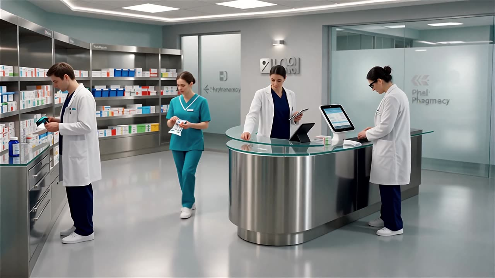

Integración con flujo quirúrgico
Interfaces HL7 / FHIR sincronizan con Epic y Cerner para preparar kits por caso usando datos del EMR en tiempo real.

Distribuido en Argentina · Sede en Buenos Aires
Almacenamiento inteligente para activos médicos críticos.

Inteligencia estéril. Cero compromisos.
El gabinete Cykeo mantiene los consumibles quirúrgicos bajo llave, registrados y fáciles de rastrear. Doble cámara más RFID maneja 400 ítems con precisión del 99%, reduciendo horas de personal y errores. Funciona en salas estériles, compatible con Windows y Android, y cumple los requisitos de auditoría ANMAT y FDA.
menos tiempo de preparación de quirófano
"El Hospital Italiano de Buenos Aires redujo 40% el tiempo de preparación de quirófano usando este sistema. Todos los reportes de uso de implantes son automáticamente compliant con ANMAT y HIPAA."
— Caso real documentado en hospitales de Argentina
Impinj R2000 identifica 800+ ítems por estante, 1.000 tags/min.
Vena del dedo + RFID con auditoría, cumple FDA 21 CFR Part 11.

Acero al carbono 1.2mm, 200kg de carga, IP54 para lavado de quirófano.
Ingeniería de precisión para entornos hospitalarios exigentes.
HD multitouch con Windows o Android. Control total del inventario a la vista, escaneos completos en segundos.
Hasta 400 piezas trazadas en simultáneo con precisión superior al 99%, incluso a través de puertas de vidrio.
Escaneo completo del gabinete en 5 segundos, 1.000 tags por minuto. Rotación de quirófano sin demoras.
Resistente a polvo y agua. Soporta lavado de descontaminación estándar en quirófanos argentinos.
Chasis de acero al carbono de 1.2mm. Construido para uso intensivo en ambientes hospitalarios exigentes.
Cobertura UHF global. Compatible con estándares EPC C1G2 e ISO 18000-6C para tags de cualquier proveedor.
El rendimiento del producto se basa en pruebas en ambiente controlado. Según el entorno, los resultados pueden variar.
Conectividad WiFi y 4G mantiene alertas en vivo. Siempre sabés qué entra y qué sale, sin demoras, sin ítems perdidos. Control directo, sin complicaciones.
Enviá tus requisitos y datos de contacto válidos. Nuestros ingenieros entregan una solución personalizada en 24 horas.
Coordinamos una demostración presencial u online en Buenos Aires y todo el país.
Gracias. Nuestro equipo de Argentina se contactará a la brevedad para coordinar la demostración.